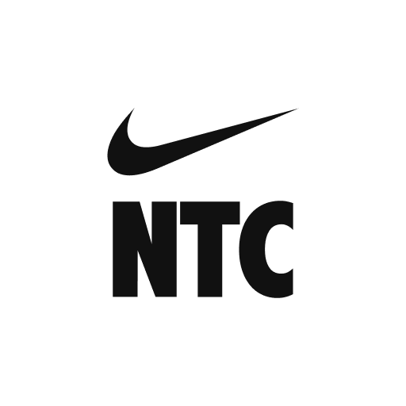
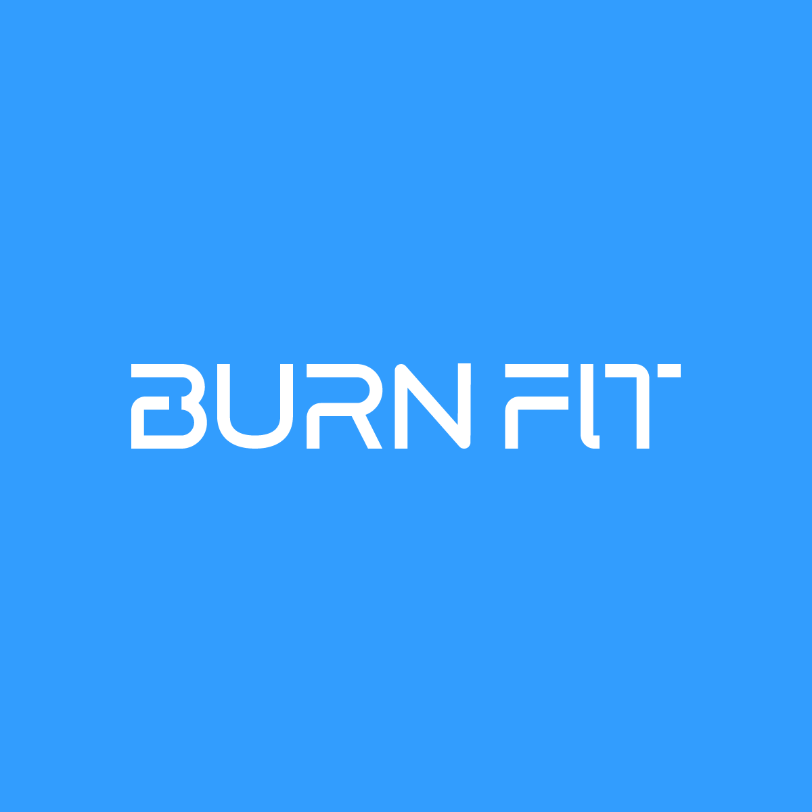
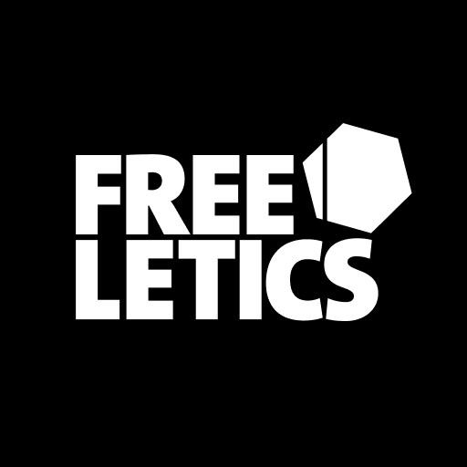
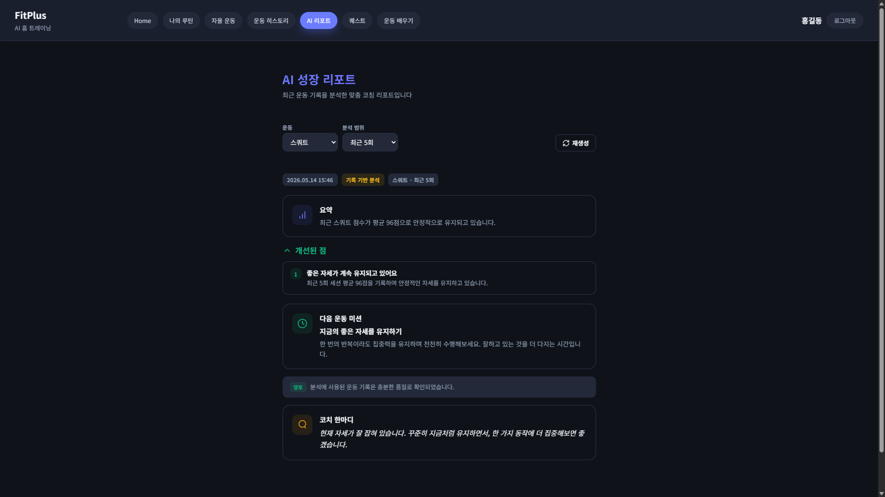
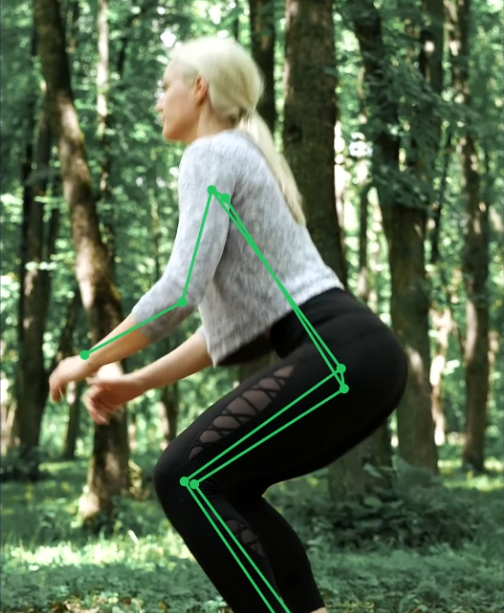
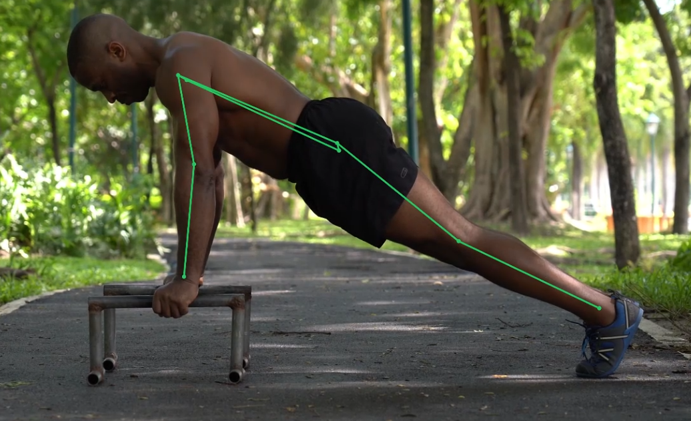
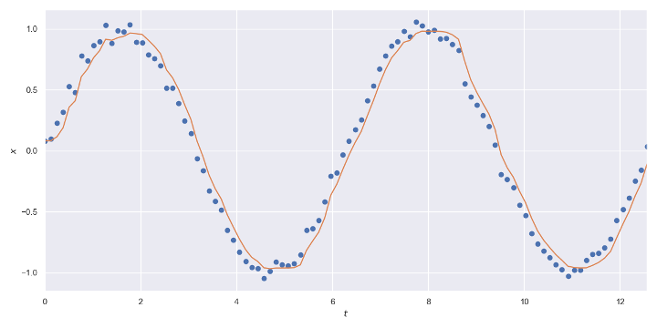
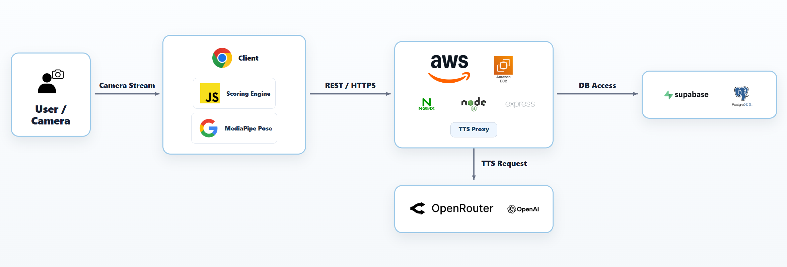
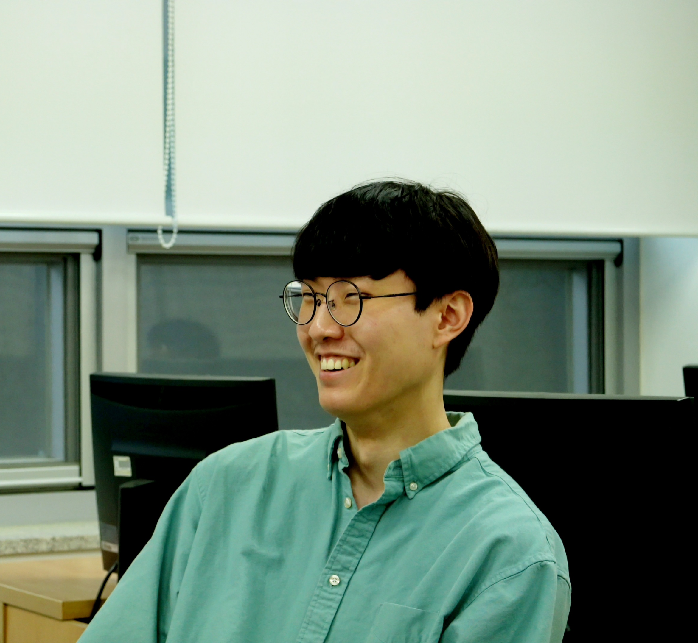

운동하는 당신의 자세
AI가 봐줍니다
웹캠 하나로 시작하는 실시간 운동 코칭 서비스
집에서 운동할 때,
정확한 자세를 알 수 있을까?
홈트레이닝은 접근성이 높지만, 실제 운동 순간에 내 자세가 맞는지 확인하기 어렵습니다. FitPlus는 이 빈틈에서 출발했습니다.
혼자 운동할 때는 자세가 맞는지 즉시 확인하기 어렵다.
잘못된 자세는 운동 효과 저하와 부상 위험으로 이어질 수 있다.
PT나 전문 장비 기반 코칭은 비용, 시간, 장소의 제약이 있다.
기존 운동 앱은 기록은 남겨줘도 실시간 자세 교정까지 해주는 경우는 제한적이다.
기존 운동 앱은 왜 충분하지 않을까?
| 유형 | 대표 사례 | 제공 기능 | 한계 |
|---|---|---|---|
| 영상/콘텐츠형 | Nike Training Club, 콰트 | 운동 영상, 루틴, 트레이너 가이드, 홈트 콘텐츠 제공 | 영상을 보고 따라 할 뿐, 자신의 자세가 맞는지는 직접 판단해야 함 |
| 기록/분석형 | 번핏, Peloton Strength+ | 세트, 횟수, 무게, 운동 기록, 통계, 진행률 관리 | 운동 결과는 기록하지만, 잘못된 자세가 발생하는 순간 바로 개입하지 못함 |
| AI 루틴 추천형 | Freeletics, 플랜핏 | 목표·운동 수준 기반 맞춤 루틴 추천, 운동 가이드 제공 | AI 코치가 있어도 주로 루틴 추천·운동 계획 중심이며 실시간 자세 피드백과는 거리가 있음 |
| 스마트 장비 기반형 | Tempo, Tonal | 센서·카메라 기반 자세 분석, 실시간 피드백 | 별도 장비, 전용 기기, 높은 비용, 설치 공간의 부담이 큼 |

콘텐츠형
기록/분석형
AI 루틴 추천형 스마트 장비 기반형
스마트 장비 기반형
누구에게 필요한가?
FitPlus는 운동을 시작하려는 사람에게 단순한 기록 앱이 아니라, 집에서도 자세를 바로잡아주는 개인 코칭 경험을 제공합니다.
홈트레이닝 초보
정확한 자세로 운동을 해보고 싶지만, 혼자서는 무엇이 틀렸는지 알기 어려운 사용자
꾸준함이 어려운 사용자
운동을 꾸준히 해보고 싶지만 번번이 실패하고, 동기 부여와 피드백이 필요한 사용자
웹캠 하나로 시작하는
실시간 운동 코칭
FitPlus는 카메라, 자세 추론, 운동별 규칙, 기록 분석을 하나의 코칭 흐름으로 연결합니다.
4단계로 시작하는 AI 코칭
운동 배우기
단계별 가이드로 자세를 학습
자유 운동
원하는 운동을 바로 시작
루틴 운동
여러 운동을 순서대로 수행
운동 선택
운동 배우기 / 자유 운동 / 루틴 운동
카메라 준비
웹캠 허용 후 자세 잡기
실시간 코칭
점수와 피드백 확인
결과 분석
기록 저장 및 AI 분석
운동하는 순간,
자세를 바로 잡아줍니다.
MediaPipe Pose 기반 landmark로 관절 각도, 자세 안정성, 반복 수행 상태를 분석합니다. 운동별 기준에 따라 자세 점수와 음성 피드백을 즉시 제공합니다.
운동별로 다른 자세 기준을 적용합니다.
스쿼트, 푸쉬업, 플랭크는 움직임과 위험 자세가 다르기 때문에 운동별 코칭 포인트를 분리했습니다.
스쿼트
무릎 정렬, 엉덩이 깊이, 상체 기울기를 기준으로 자세를 평가합니다.
푸쉬업
팔꿈치 각도, 몸통 정렬, 내려가는 깊이를 중심으로 수행 상태를 확인합니다.
플랭크
허리 꺾임, 골반 높이, 자세 유지 시간을 기반으로 안정성을 분석합니다.
운동이 끝나면,
기록이 성장으로 남습니다.
세션별 점수, 반복 횟수, 운동 시간, 자세 피드백을 히스토리로 저장합니다. 사용자는 이전 기록과 비교하며 자신의 변화를 확인할 수 있습니다.
기록이 쌓이면,
AI가 개선 포인트를 찾아줍니다.
누적된 운동 기록을 기반으로 반복되는 자세 오류, 성장 추이, 다음 운동 방향을 분석합니다.
자세 오류 패턴 분석
반복적으로 발생하는 무릎 정렬, 허리 각도, 자세 흔들림을 파악합니다.
성장 추이 요약
운동별 점수 변화, 수행 시간, 반복 횟수 변화를 AI가 요약합니다.
다음 운동 제안
부족한 자세 요소와 운동 지속성 데이터를 바탕으로 다음 루틴 방향을 제안합니다.

꾸준히 하도록
루틴과 퀘스트로 이어갑니다.
루틴 설정, 퀘스트 달성, 뱃지 시스템을 통해 단발성 운동을 지속 가능한 습관으로 전환합니다.
카메라 입력부터 AI 분석까지
FitPlus는 실시간 분석과 누적 기록 분석을 하나의 데이터 흐름으로 연결해, 운동 중 피드백과 운동 후 개선 방향을 함께 제공합니다.
Camera
웹캠 영상 입력
Pose Landmark
관절 좌표 추론
Rule Engine
운동별 자세 판정
Feedback
점수와 음성 안내
AI History
누적 기록 분석
자세 분석 알고리즘
웹캠 영상에서 관절 landmark를 추출하고, 카메라 뷰와 관절 각도를 계산해 운동 자세를 수치화합니다.
| 1. Landmark 추출 | MediaPipe Pose로 어깨, 팔꿈치, 엉덩이, 무릎, 발목 좌표를 프레임 단위로 획득 |
|---|---|
| 2. View 판정 | 정면/측면을 구분해 운동별로 적절한 각도 계산 기준 적용 |
| 3. 관절 각도 계산 | p1-p2-p3 세 점을 기준으로 무릎, 팔꿈치, 엉덩이, 척추 기울기 계산 |
| 4. 자세 지표화 | elbow_angle, hip_angle, spine_angle 등 핵심 지표로 자세 판단 |


반복 수와 버티기 시간 계산
운동 종류에 따라 반복 운동은 phase 전환으로, 버티기 운동은 hold 상태 유지 시간으로 측정합니다.
| 스쿼트 / 푸쉬업 | NEUTRAL → TRANSITION → ACTIVE → TRANSITION → NEUTRAL 한 사이클을 1 rep으로 계산 |
|---|---|
| 반복 수 검증 | 최소 지속 시간 minDuration 800ms 미만이면 카운트 제외 |
| Active 검증 | 가장 낮게 내려간 Active 구간이 200ms 미만이면 카운트 제외 |
| 플랭크 | 자세 기준 충족 시 HOLD 상태로 진입하고, 흔들림을 고려해 400ms 유예 적용 |
PLANK
SETUP → HOLD → BREAK
HOLD 이탈 400ms 유예실시간 분석의 신뢰성을 높이는 방법
One Euro Filter
프레임마다 흔들리는 좌표를 보정합니다. 느린 동작에서는 jitter를 줄이고, 빠른 동작에서는 지연을 줄여 실시간 코칭 반응성을 유지합니다.

Quality Gate
confidence, 프레임 포함 비율, 관절 가시도, 뷰 안정성 기준을 통과한 프레임만 점수 계산에 사용합니다.
| 감지 신뢰도 | 0.50 이상 |
|---|---|
| 추적 신뢰도 | 0.50 이상 |
| 프레임 포함 비율 | 0.85 이상 |
| 핵심 관절 가시도 평균 | 0.65 이상 |
| 불안정 프레임 비율 | 0.30 미만 |
영상은 서버로 보내지 않습니다.
FitPlus는 브라우저 안에서 자세를 분석하고, 서버에는 운동 결과와 요약 데이터만 저장합니다. 사용자의 운동 영상 자체는 외부로 전송하지 않는 구조를 지향했습니다.
On-device Pose Analysis
웹캠 영상과 MediaPipe Pose 추론은 사용자 브라우저에서 처리합니다.
Video Upload 없음
운동 중 촬영되는 원본 영상은 서버에 업로드하거나 저장하지 않습니다.
기록 데이터만 저장
점수, 반복 수, 운동 시간, AI 분석 결과처럼 서비스에 필요한 기록만 관리합니다.
기술 스택
실시간 pose inference는 클라이언트에서, 서버는 인증과 기록 관리를 담당합니다.
Frontend
Backend
Data
Voice
시스템 구조

현재 한계와 향후 계획
카메라 각도/조명
촬영 환경에 따라 인식 품질이 달라질 수 있습니다.
신체 비율 차이
다양한 체형에 대한 보정이 추가로 필요합니다.
Occlusion
신체 일부가 가려질 경우 분석이 제한됩니다.
향후 개선 방향
리더보드 추가
더 다양한 운동 추가
Validation dataset 구축
만든 사람들
2026 국민대학교 캡스톤디자인 14조
남재준
20212985

이창조
20213064
감사합니다.